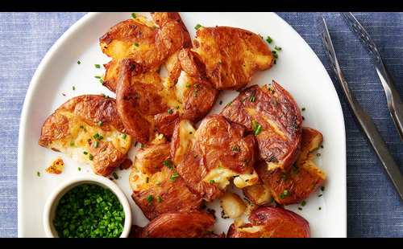

Crispy Smashed Potatoes

The best smashed potatoes recipe!
These Smashed Potatoes are my new favorite way to eat potatoes!
These Crispy Smashed Potatoes are perfectly crispy on the outside
while the inside of the potato just melts in your mouth.
Ingredients
- 1.5 lbs Petite Yukon Gold or FIngerling Potatoes
- 3 Tablespoons Salted Butter * (melted)
- 2 Tablespoons Extra-Virgin Olive Oil
- 1 teaspoon Salt
- ½ teaspoon Pepper
- Fresh Parsley (chopped)
Steps
- Start by using petite gold or fingerling potatoes.
- Parboil the potatoes
- Drain the water and place the potatoes in a colander
to allow the steam to release for about 5 minutes
- Drizzle the potatoes with melted salted butter
and extra-virgin olive oil
- Bake in a 425-degree oven for about 35-45 minutes
- Sprinkle with fresh parsley and serve with garlic
cheddar sour cream di
Back to homepage